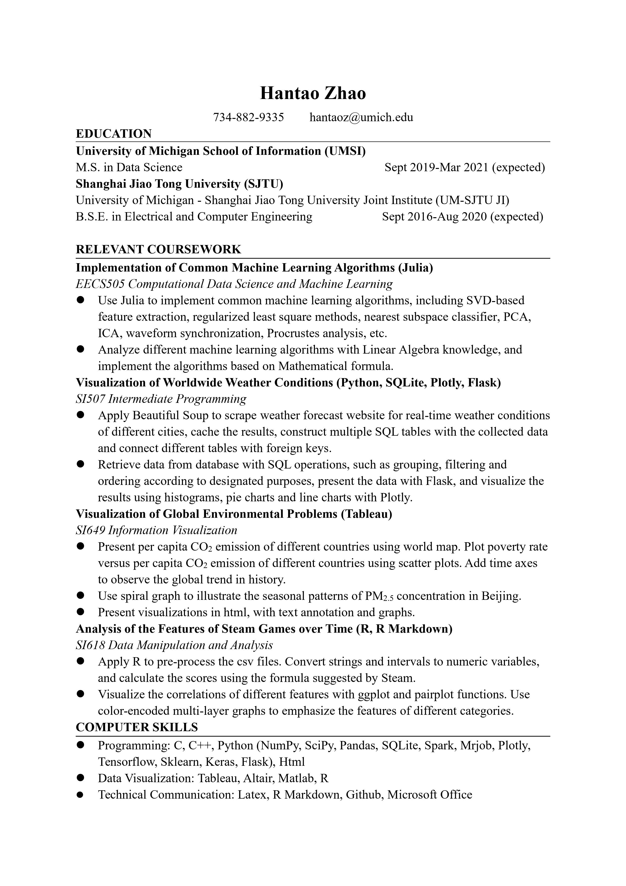

Personal Information
My Education
I am a Master of Scicence in Information Student at University of Michigan, School of Information. I'm currently choosing Data Science as my track.
Meanwhile, I am a Bachelor of Science in Electrical and Computer Engineering at Shanghai Jiao Tong University, UM-SJTU Joint Institute.
My Skills
- Programming:
C, C++, Python (NumPy, SciPy, Pandas, SQLite, Spark, Mrjob, Plotly, Pytorch, Sklearn, Keras, Flask), Html, Css
- Data Visualization:
Tableau, Altair, Matlab, R
- Technical Communication:
Latex, R Markdown, Github, Microsoft Office
My Awards
| Year | Award |
|---|---|
| 2017 | "Three Goods" Merit Student of Shanghai Jiao Tong University |
| 2018 |
|
| 2019 | Undergraduate's scholarship for academic excellence (Type C) |
My Resume (keyboard accessible)
B.S.E. in Electrical and Computer Engineering Sept 2016-Aug 2020 (expected)
University of Michigan School of Information (UMSI)M.S. in Data Science Sept 2019-Mar 2021 (expected)
Implementation of Common Machine Learning Algorithms (Julia)
EECS505 Computational Data Science and Machine Learning
Visualization of Global Environmental Problems (Tableau)
SI649 Information Visualization
Analysis of the Features of Steam Games over Time (R, R Markdown)
SI618 Data Manipulation and Analysis
My Hobbies
In my leisure time, I enjoy watching documentary videos on Youtube. It's exciting to learn more about the world, isn't it? The splendid natural sceneries are so breathtaking, and the baby animals are so cute.
I've been playing Go since childhood, and reached 1d. Go is an ancient board game orginatecd in China, and I guess you know about AlphaGo.
Sometimes I play video games as well, such as StarCraft 2.